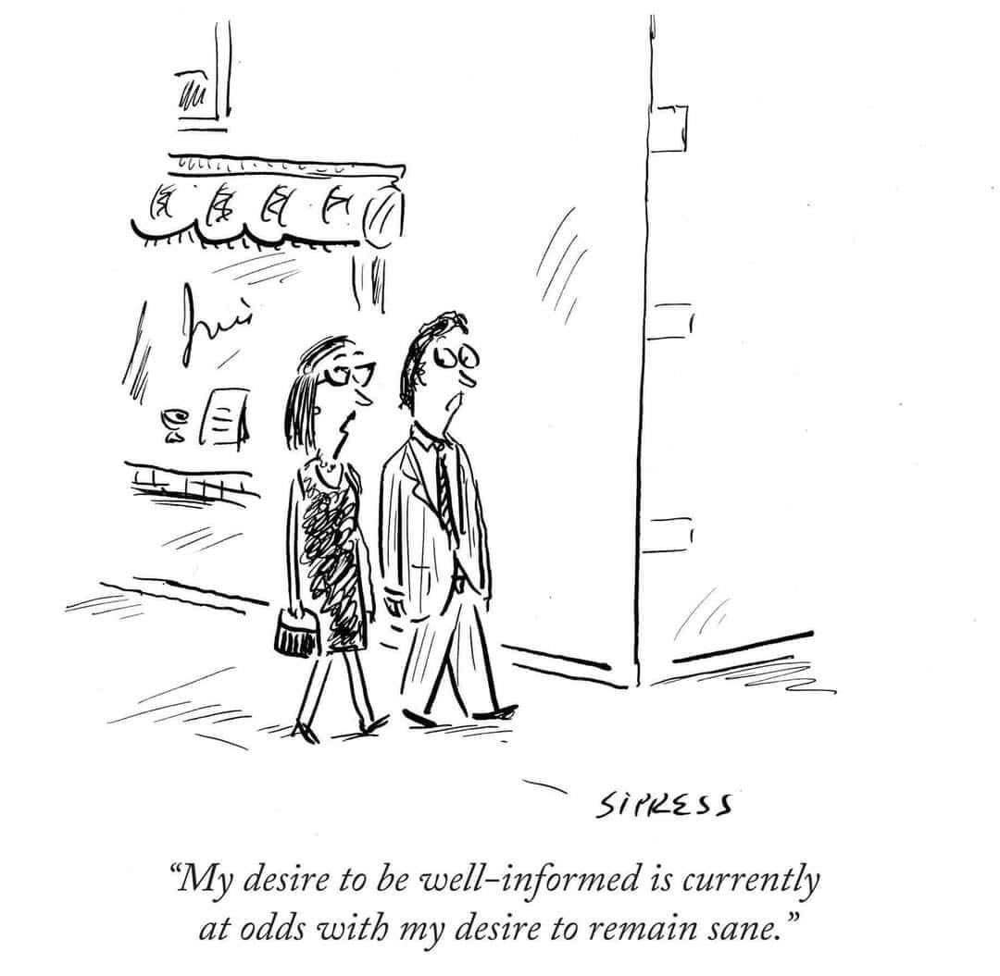

Dollar Cost Averaging & News Cycles
You should have this thought ready in hand against any eventuality: “I have seen this before.” Generally whenever you look you will find the same things. The histories—ancient, more recent, and modern—are full of them: cities and households are full of them today. There is nothing new. All is familiar and all short lived.
Look back over the past—all those many changes of dynasties. And you can forsee the future too: it will be completely alike, incapable of devitiating from the rhythm of the present.
— Aurelius

There was a long period of time, a few years, during which I consumed the news ravenously, like a man working through a tasting menu at the world’s most anxious restaurant.
My daily degustation began with New York Times headlines—an amuse-bouch to confirm the world hadn’t ended—paired with a glass of full-bodied top stories (or is that stories top-full of bodies?) from Reuters and CNN. (A veteran of this marathon menu, I always reserved a corner of NYT sourdough for the sauces to come). The first course proper was a terrine of major papers, garnished with local news, before moving to the richer dishes: a reduction of TechCrunch, The New Yorker, The Economist (whose sauce, thank heavens, found that saved crust), Spectator, and the FT. The Atlantic arrived like a perfectly seared but endlessly large steak; a good cut of meat, to be sure, but always over done in precisely the same way. By the time the blogs were served—a riot of small plates—I was overstuffed but still eating, driven on by the gnawing awareness of everything I did not know.
It was a glutton’s progress, leaving me bloated and still hungry. I wasn’t reading so much as gorging and like all excessive consumption it left me feeling worse than when I started. “The only people who are obsessed with food,” Stephen Fry once remarked when discussing the Catholic Church’s attitude towards sex, “are the obese and the anorexic.” When it came to the news, I was obese.
But the solution wasn’t starvation. Some argue there is no safe level of news consumption, that the only healthy relationship with the news cycle is none at all. I understand this impulse, yet I’ve found that if you’re still thinking about it—even when you’re reducing your intake—it’s still disordered. Complete abstinence often just transforms one obsession into another.
In searching for a more sustainable approach, I found myself drawing unexpected parallels with dollar-cost averaging. In investing, dollar-cost averaging means committing to regular, fixed investments—say, 10% of your paycheck every fortnight—regardless of market conditions. The strategy is deceptively simple. Its wisdom lies in how it accounts for our psychological vulnerabilities: by automating our decisions, we protect ourselves from the temptation to try time the market, to react to every rise and fall. Instead, under dollar cost averaging, you buy more when the market is down, since prices are lower, and less when the market is up, the price being higher.
On busy news days, when the media feast seems endless and urgent, our instinct is to consume more, to keep up with every development. But like an overheated market overpricing fashionable stocks, the news cycle tends to overvalue the immediate and dramatic at the expense of the important and enduring.
The here and now will never end; it is always, so you cannot constrain the endless possibilities of things you could read. The only thing you can control is your time. By creating structure around our consumption—not through rigid rules but through thoughtful habits—we might find more nourishing ways to stay informed, eeking ourselves away from what is merely timely towards what is timeless.
Leset leizig die Alten, die wahren eigentlich Alten Was die Neuen davon sagen bedeutet nicht viel
Read the old ones, the real old ones. What the new ones say about it doesn’t mean much.